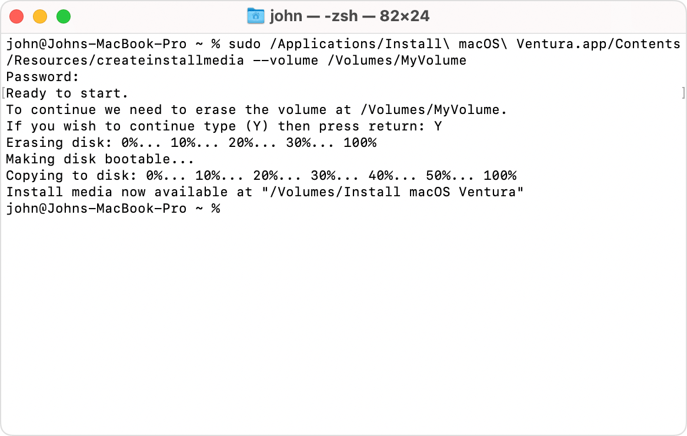

Create a bootable installer for macOS X
Download and install current or previous versions of the Mac operating system on compatible Mac computers.
Use macOS Recovery
If you need to reinstall macOS on your Mac, you can use its built-in Recovery system to do it.
How to reinstall macOS
Use the App Store
To download macOS from the App Store, use a Mac that is compatible with that macOS. If your Mac isn’t compatible, the App Store dims the Get button, says that the macOS is not compatible with this device, or says that the requested version of macOS is not available.
If these links don’t work as expected, try again using Safari, which is in your Applications folder.
Sonoma 14
Monterey 12
Catalina 10.15
- Use these links to find macOS in the App Store.
- Cick the Get button in the App Store to begin downloading. Software Update might open and ask you to download from there.
- After downloading to your Applications folder, the installer opens automatically. Follow the onscreen installation instructions. Or quit without installing to leave the installer in your Applications folder for later use.
Use a web browser
These older macOS versions are available as disk images that you can download using your web browser. To get the installer from the disk image, use a Mac that is compatible with that macOS.
If these links don’t work as expected, try again using Safari, which is in your Applications folder.
Sierra 10.12
El Capitan 10.11
Yosemite 10.10
Mountain Lion 10.8
Lion 10.7
- Use these links to download a macOS disk image (.dmg) file.
- Double-click the .dmg file to open it and see the package (.pkg) file within.
- Double-click the .pkg file, then follow the onscreen instructions to install the macOS installer into your Applications folder.
- Open your Applications folder and double-click the macOS installer, named Install [Version Name]. Follow the onscreen installation instructions.
Use a bootable installer
A bootable installer can be useful if you want to install macOS on multiple computers without downloading the installer each time, or when you can’t install using the other methods. To download an installer suitable for creating a bootable installer, use the App Store or use a web browser to download from a compatible Mac. The Mac must also be using macOS High Sierra or later, the latest version of macOS Sierra, or the latest version of OS X El Capitan.
How to create a bootable installer for macOS
- USB flash drive or other secondary volume with at least 14GB of available storage, formatted as Mac OS Extended
- Installer for OS X El Capitan or later
Download a macOS installer using the App Store or your browser
To get the full installer, your Mac must be using the latest version of OS X El Capitan, the latest version of macOS Sierra, or any later version of macOS. Download from a Mac that is compatible with the macOS you’re downloading. Enterprise administrators: download from Apple, not a locally hosted update server.
Use Terminal to create the bootable installer

- Plug in the USB flash drive or other volume that you’re using for the bootable installer.
- Open Terminal, which is in the Utilities folder of your Applications folder.
- Type or paste one of the commands below into Terminal, then press Return to enter the command. Each command assumes that the installer is in your Applications folder, and MyVolume is the name of the USB flash drive or other volume you’re using. If the volume has a different name, replace
MyVolume in the command with the name of your volume.
- When prompted, type your administrator password. Terminal doesn’t show any characters as you type. Then press Return.
- When prompted, type Y to confirm that you want to erase the volume, then press Return. Terminal shows the progress as the volume is erased.
- After the volume is erased, you may see an alert that Terminal would like to access files on a removable volume. Click OK to allow the copy to proceed.
- When Terminal says that it’s done, the volume will have the same name as the installer you downloaded, such as Install macOS Ventura. You can now quit Terminal and eject the volume.
Commands
Depending on which macOS you downloaded, enter one of the following commands in Terminal as instructed above.
If your Mac is using macOS Sierra or earlier, the command should conclude with --applicationpath followed by the appropriate installer path, as shown in the command below for El Capitan.
Sonoma
sudo /Applications/Install\ macOS\ Sonoma.app/Contents/Resources/createinstallmedia --volume /Volumes/MyVolume
Monterey
sudo /Applications/Install\ macOS\ Monterey.app/Contents/Resources/createinstallmedia --volume /Volumes/MyVolume
Catalina
sudo /Applications/Install\ macOS\ Catalina.app/Contents/Resources/createinstallmedia --volume /Volumes/MyVolume
Use the bootable installer
Determine whether you’re using a Mac with Apple silicon, then follow the appropriate steps:
Apple silicon
- Plug the bootable installer into a Mac that is connected to the internet and compatible with the version of macOS you’re installing. A bootable installer doesn’t download macOS from the internet, but it does require an internet connection to get firmware and other information specific to the Mac model.
- Turn on the Mac and continue to hold the power button until you see the startup options window, which shows your bootable volumes.
- Select the volume containing the bootable installer, then click Continue.
- When the macOS installer opens, follow the onscreen installation instructions.
Intel processor
- Plug the bootable installer into a Mac that is connected to the internet and compatible with the version of macOS you’re installing. A bootable installer doesn’t download macOS from the internet, but it does require an internet connection to get firmware and other information specific to the Mac model.
- Turn on your Mac, then immediately press and hold the Option (Alt) key.
- Release the Option key when you see a dark screen showing your bootable volumes.
- Select the volume containing the bootable installer. Then click the onscreen arrow or press Return.
If you can’t start up from the bootable installer, make sure that Startup Security Utility is set to allow booting from external or removable media.
- Choose your language, if prompted.
- Select Install macOS (or Install OS X) from the Utilities window, then click Continue and follow the onscreen instructions.
Learn more
For information about the createinstallmedia command and the arguments you can use with it, make sure that the macOS installer is in your Applications folder, then enter the appropriate path in Terminal:
/Applications/Install\ macOS\ Sonoma.app/Contents/Resources/createinstallmedia
/Applications/Install\ macOS\ Monterey.app/Contents/Resources/createinstallmedia
/Applications/Install\ macOS\ Catalina.app/Contents/Resources/createinstallmedia
Published Date: April 20, 2023